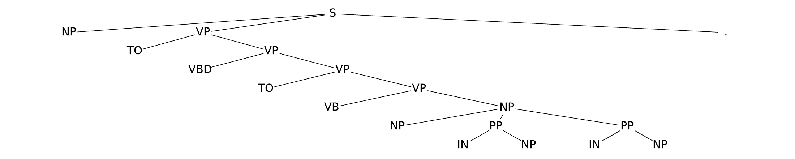
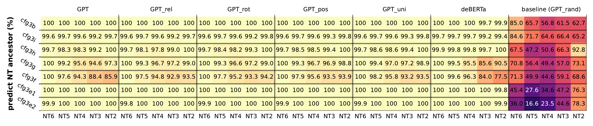
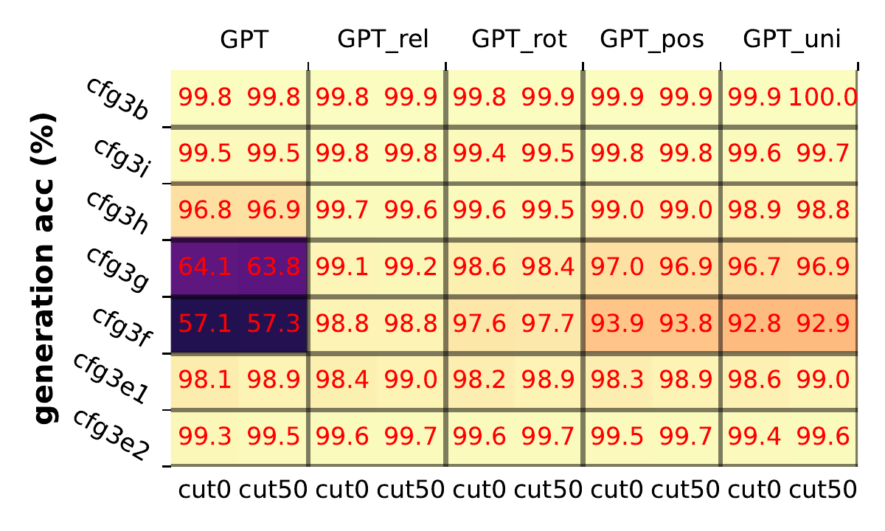
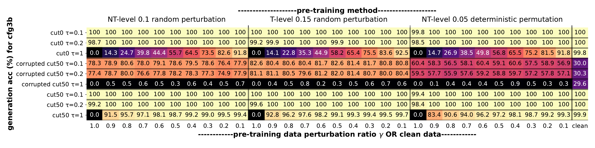

Motivation
Language requires hierarchical decisions. Flat next-token matching cannot resolve deep structural ambiguity.
Relative/rotary position encoding is the turning point for hierarchical learning.
Background
- Controlled synthetic CFGs isolate hierarchy from lexical semantics.
- Depth extends to 7 NT levels and sequence lengths approach 300 tokens.

Original paper parse-tree visual (PTB) grounds the hierarchy intuition.
Research Questions
- Can transformers generate valid strings from deep CFGs?
- Where is NT ancestor information stored in hidden states?
- Do learned attention patterns resemble parsing algorithms?
Experimental Setup
All models use GPT-2-small scale (12 layers, 12 heads, 768 dim) with matched training protocol.
Method
The study combines controlled training with representation and mechanism audits.
- Same architecture budget across PE variants for fair comparison.
- Primary evidence from original paper plots, not re-estimated metrics.
Key Insight
Transformers store parse-tree information at boundary tokens. A linear probe recovers NT ancestors almost perfectly.
Interpretation: the model does not only memorize next-token statistics; it learns a local code for hierarchy that downstream attention can read.
Evidence: NT Probing

Original figure: last-layer representations linearly encode NT ancestors. Relative and rotary variants lead.
- Encoder baseline underperforms on deep NT levels.
- Local-window probing retains strong performance near NT boundaries.
How It Works (Mechanistic View)
Attention heads specialize by distance and NT level, creating a computation graph aligned with dynamic programming recurrences.
This bridges interpretability evidence with classical CFG parsing ideas.
Results (Headline)
The dominant empirical result is clear in the original chart: relative and rotary GPT variants learn CFG generation reliably.

Original paper figure (`generation/all_acc.pdf`): generation accuracy across CFG variants.
Robustness

Original robustness matrix (cfg3b): mixed clean/noisy prefixes trigger distinct generation modes.
- Low temperature (tau ≤ 0.2) improves robust decoding.
- Training with mixed clean/corrupted data stabilizes behavior.
Discussion and Limitations
Implications
Evidence supports the claim that autoregressive transformers can implement hierarchical algorithms, not just shallow heuristics.
Limitations
Synthetic CFGs are controlled but simplified. Transfer to open-domain language and larger model scales needs direct validation.
Part 2+ of the series extends this analysis to math reasoning and knowledge circuits.
Paper and Code Links
Scan for paper: arXiv:2305.13673
Allen-Zhu, Z., and Li, Y. (2024). Physics of Language Models: Part 1.
Project page:
physics.allen-zhu.com/part-1
Reference video talk and supplementary plots are linked on the project page.